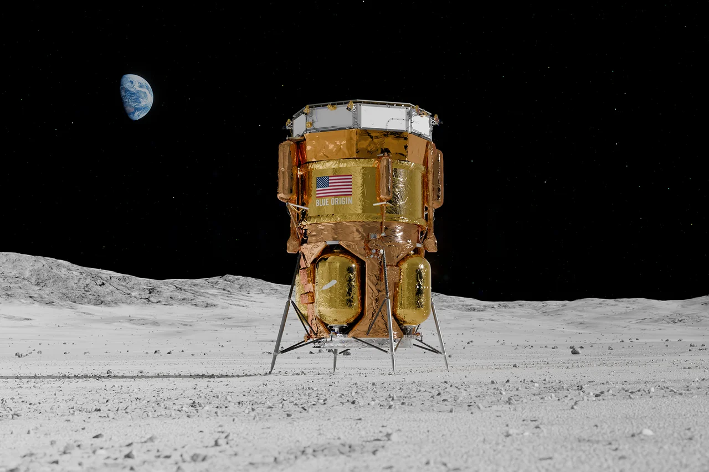

Mark 1 · Cargo
- Compito
- Consegnare strumenti, rover e attrezzature sulla superficie.
- Lancio
- Un New Glenn. Blue Origin indica fino a 3 tonnellate di carico nella configurazione 7×2.
- Propulsione
- Un motore BE-7 riaccendibile, a idrogeno e ossigeno liquidi.